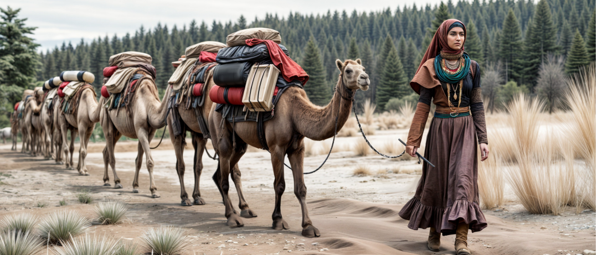

Türklerde Konargöçer Yaşam
Tarihsel kaynaklar, dönem koşulları ve kültürel miras eşliğinde etkileşimli öğrenme yolculuğu.
TAR.9.2.5. Türklerde konargöçer yaşama ilişkin bakış açısı geliştirebilme
Kaynak Sınıflandırma
Her kaynağı birinci el veya ikinci el olarak sınıflandırınız.


Özellik Eşleştirme
Sol taraftaki kavramı seçiniz, ardından sağ taraftaki uygun açıklamayı seçerek eşleştiriniz.
🏷️ Kavramlar
📋 Açıklamalar
Neden-Sonuç İlişkisi
Konargöçer yaşamın tarihi nedenlerini inceleyiniz ve ortaya çıkan tarihsel sonuçları değerlendiriniz.
Türk Otağında Keşif
Görseldeki parlayan simgelere tıklayarak konargöçer yaşam koşullarını keşfediniz.

Obje Başlığı
✓ KeşfedildiObje açıklaması burada görünecektir.
Geçmiş ve Günümüz
Kültürel öge kartını basılı tutarak ait olduğu zaman sütununa (Sadece Geçmiş, Sadece Günümüz veya Her İki Dönem) sürükleyip bırakınız.
Değer Seçimi ve Bakış Açısı
Konargöçer yaşamı en iyi tanımlayan üç değeri seçiniz ve kendi bakış açınızı ifade ediniz.

Türklerde konargöçer yaşam tarzının tarihi ve kültürel önemi hakkındaki düşüncenizi ifade ediniz:
Keşfinizi Tamamladınız!
Harika bir öğrenme yolculuğu gerçekleştirdiniz! İlettiğiniz cevaplarla Tariat Kitabesi'nden Sarıkeçili Yörüklerine uzanan konargöçer kültürün temel öğelerini pekiştirdiniz.